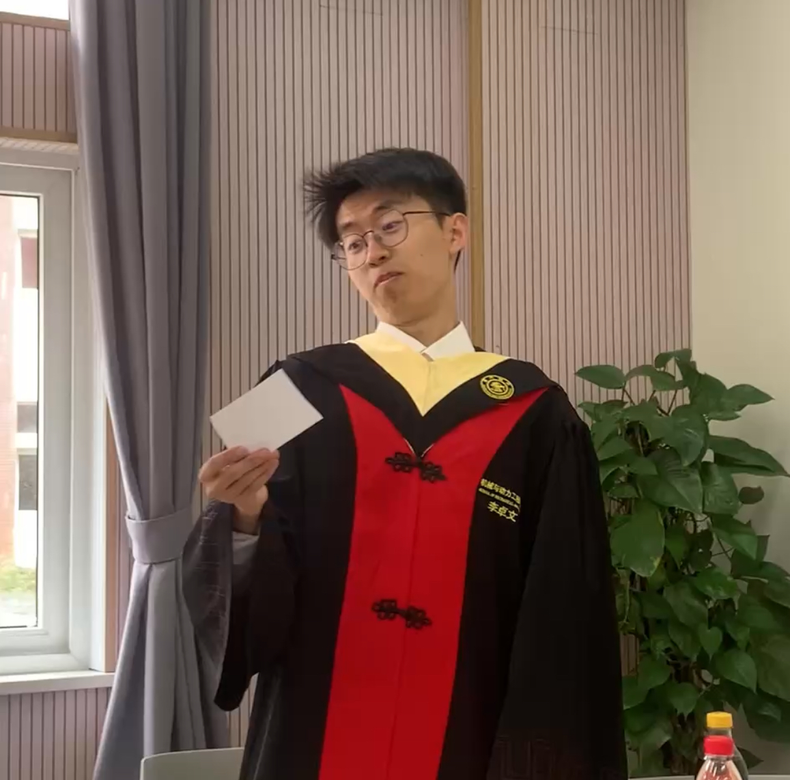
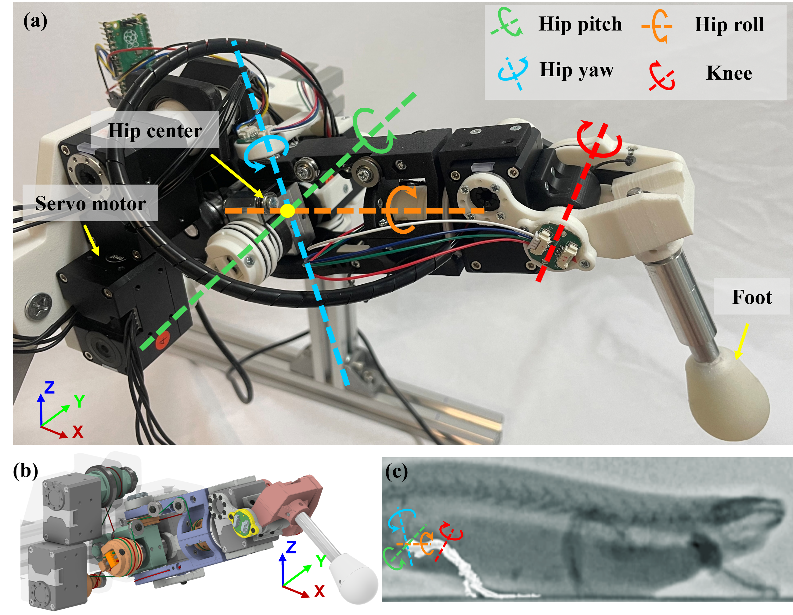
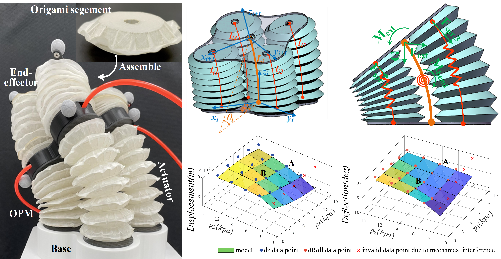
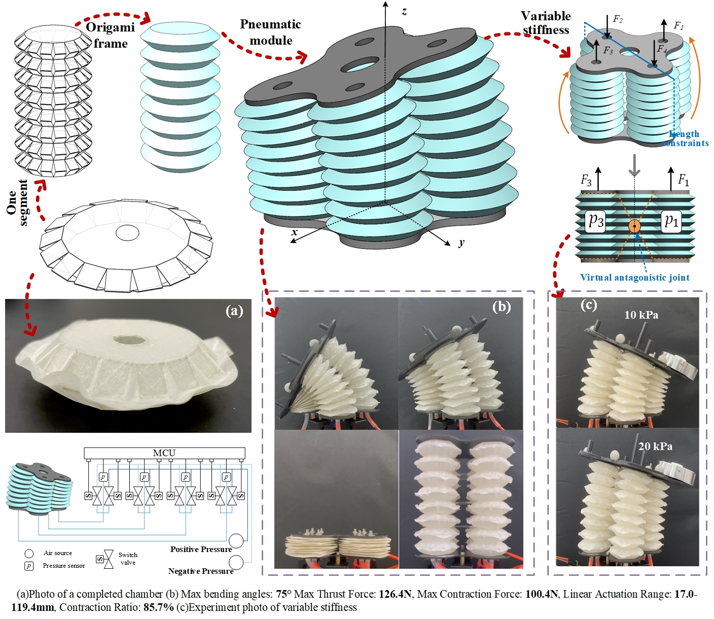
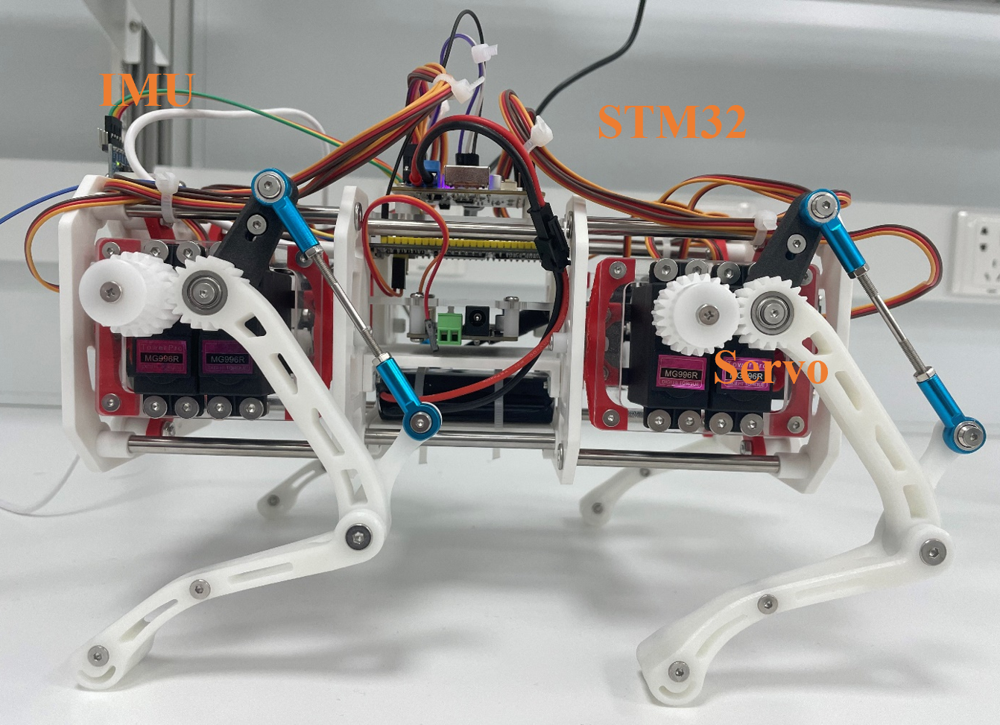

|
 |
Zhuowen LiEmail / CV / Google Scholar / GitHub Hi, I'm Zhuowen Li. I'm currently a first-year PhD student in Mechanical Engineering at UC San Diego, advised by Prof. Haiwen Luan. Previously, I received my B.E. in Mechanical Engineering from Shanghai Jiao Tong University. I worked at the IRMV Lab, advised by Prof. Hesheng Wang and Prof. Fan Xu. I also worked as a research intern at EPFL's Biorobotics Lab with Prof. Auke Ijspeert. I also interned at Sharpa, where I contributed to the mechanical design of the WAVE 02 dexterous hand and the development of its tactile sensors. |
ResearchMy current research focuses on flexible sensors for human health. I am also interested in developing devices, from sensors to mechanical mechanisms, that expand robots' capabilities, enabling more refined perception and more precise manipulation. To pursue these goals, I draw inspiration from both engineering and nature. More broadly, I hope my work in robotics will contribute to human–robot interaction, health monitoring, animal research, or the creative fields of art and design. |
NewsTo be updated. |
Internship |

|
Contributed to the development of the
Sharpa WAVE 02 dexterous hand
|
Publications |
|
 |
Design of a Compact Cable-driven 4-DoF Salamander Robotic Limb with Large Range of Motion and High Load Capacity
Z. Li, Q. Fu, A. Ijspeert arXiv preprint We present a cable-driven 4-DoF salamander robotic limb with a spatial cable-routing architecture that relocates actuators proximally while preserving large ROM and load capacity. The proposed limb provides a biologically representative platform for future studies of salamander locomotion and neural control. Paper |
|
 |
Origami-Inspired Pneumatic Continuum Manipulator: Stiffness Modeling and Validation
Z. Li*, H. Chen*, C. Xu, F. Xu International Conference on Intelligent Robots and Systems (IROS), 2025 (Oral) We propose a static and stiffness model for an origami-inspired pneumatic continuum manipulator (OPM), achieving prediction errors below 5 mm/3° under a 300 g load. Paper |
|
 |
An Origami-Inspired Pneumatic Continuum Module with Active Variable Stiffness
Z. Li, H. Chen, F. Xu, H. Wang International Conference on Intelligent Robots and Systems (IROS), 2024 (Oral) We designed a 3-DOF origami-inspired pneumatic continuum module with a high contraction ratio, bidirectional actuation, and active stiffness regulation. Paper |
Projects |
|
 |
A 12-DOF Quadruped Robot Based on STM32
Designed and fabricated a 12-DOF quadruped robot with an original mechanical structure and an STM32-based control system that fuses IMU data for real-time attitude feedback, enabling ground locomotion with a trot gait. |
|
Quadruped Locomotion with Central Pattern Generators
Implemented quadruped locomotion with central pattern generators to control multiple gaits, using PD control in both joint and Cartesian spaces to track the desired motions. |

Education
-
Shanghai Jiao Tong University

-
EPFL
-
UC San Diego
Experience
-
SJTU IRMV Lab
-
EPFL Biorobotics Lab
-
Sharpa
-
UCSD Luan Research Group